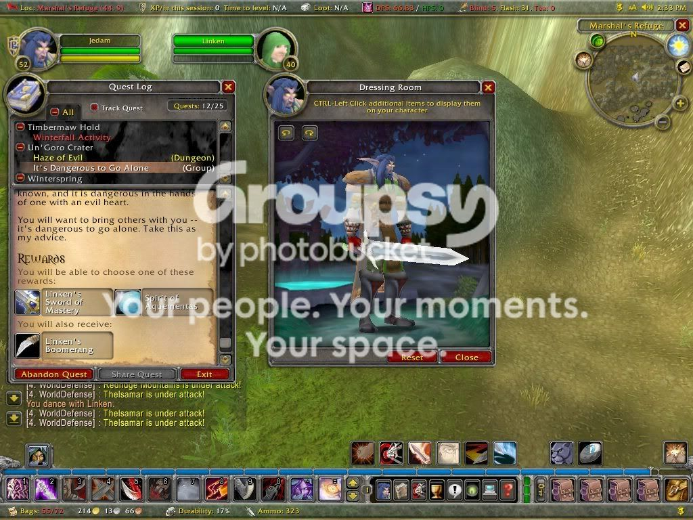

#356489 16 2007-08-17T19:49:06Z tomthebomb *snip*
how did u get all those levels into one picture and make it all look like 1 big level?
Don't quote an entire post when it's that long!
#17291 1 2007-09-22T02:12:45Z tomthebomb ive seen alot of cool autogenerated levels and i was wondering, wat is an autogenerated level and how do u make them
#17298 1 2007-09-23T01:37:12Z tomthebomb why arnt there any dda packs? i mean ive only seen one and im sick of goin to numa and copying pasting copying pasting ugggh its makn me mad. also i cant get the firefox extension to work so yea plz post dda packs
#17310 1 2007-09-23T20:49:42Z tomthebomb kkstrong0,and Atilla on my last topic about people need to post more dda packs and that ive only seen a few dda packs well guess wat... the link u gave me was the one i had all ready seen saw so yea stop sayn i should look harder next time...
now then i
DIDN'T make the levels but i
DID make the pack the pack contains every dda made by the authors of the top 20 ddas on numa as of september 23, 2007...if u think one of these maps stinks, its probaly becus its the one of the authors first ddas...have fun
Attachment (lost): post-49-1190581371.txt
#368876 204 2007-10-01T21:29:57Z tomthebomb WOW this is cool ive beaten a few of columns and i think it would be cooler if u could unlock different flavours from beating each column is there any way u can add flavours?
#369151 220 2007-10-02T21:36:00Z tomthebomb again i ask is there any way to add flavours to these new 100 columns? also how did u make this add-on
#369449 37 2007-10-03T23:23:31Z tomthebomb can someone help me with this firefox thing? now then i went to the site to download this extension (
http://coolguy5678.biaklan.com/numadd/numadd.html) i clicked
download then i hit
save and
saved it in my
n_14 file, then i opened the file and
extracted all the files, then i opened a new internet explorer and right clicked the toolbar and clicked
customize
i mean i followed the instructions on the site but wen i click customize, i couldnt find numadd plz tell me if i messed up anywhere
#369893 39 2007-10-05T22:03:37Z tomthebomb uhh.... you opened it in Internet Explorer. Need I say more?
no i mean that i opened up a new blank internet explorer, i didnt open the numa add in internet explorer i mean i also couldnt find numadd wen i clicked customize in in the program files or watever
plz tell me wat i did wrong. read wat i did 2 posts above this one and plz tell me wat i did wrong so yea
#370329 42 2007-10-07T19:45:04Z tomthebomb can someone help me with this firefox thing? now then i went to the site to download this extension (
http://coolguy5678.biaklan.com/numadd/numadd.html) i clicked download then i hit save and saved it in my n_14 file, then i opened the file and extracted all the files, now i opened a new internet explorer and clicked customize on the toolbar but i couldnt find numadd. i also clicked on customize in my programs but i still couldnt find it im soo mad and sick of copying and pasting so yea plz help me
#17549 1 2007-10-14T17:24:44Z tomthebomb here were my stats that i had done(i know which ones cus i wrote them down)
ive beaten episodes 0-29, got my 3 new flavours(pink,yellowish-brown,and cyan) i also beated episodes 30-33,40-44,50-54,60-68(i just needed to beat 69 and gotten a new flavour),70-73,80, and 90-92
now wen opened n up, it was working perfectly, but wen i opened it later, all my progress was deleted, my flavours, columns beaten, everything plz tell me if there is any way i can get it all back
#372098 3 2007-10-15T02:29:14Z tomthebomb This happens to me sometimes, but it doesn't acually mean that the progress is deleted. Try going to the original folder containing N (the one that was created after extracting the zipped folder), and opening the N from that folder.
i am using the folder i exracted
#17769 1 2007-11-02T21:54:57Z tomthebomb I found this pic of a game on Photobucket, and I'm wondering: What's this game called?

#376356 4 2007-11-02T22:23:37Z tomthebomb Oooo, yea, I forgot. I didn't know that because I haven't played it in a long time. Boy, I remember it stunk too, and the graphics suck, but you probably guessed that I quit playing it.
SO YEA. WoW sucks ass.
#378236 234 2007-11-10T14:15:29Z tomthebomb i agree it can get boring if u play it too much i mean i hardly play it maybe like once a month anyway my zwok sttats as of Saturday, November 10, 2007 r
Zwok I.D: ucanbereplaced
position: 2657
Rank: TetraGramaZoid
Matches: 1089
Overall Score: 839722
Accuracy: 63%
Weapon of Choice: Brick51%, Bouncer36%,Cluster9%, and Other4%
#17865 1 2007-11-10T14:22:27Z tomthebomb my bro needs help with this stupid game called swords and sandals crusader
he is on chapter 1, mission 4 and has no clue where the book is that he has to find
where is the freaking book!
#18298 1 2007-12-07T00:19:27Z tomthebomb i need more ratings on this map and this is the first time ive ever posted one of my maps on metanet
p.s. im not a noob so dont think that when i say its my first map im posting on metanet that its my first map on numa too cus its not
so heres the first on metanet plz rate + comment
http://numa.notdot.net/map/110177#20319 1 2008-05-24T23:14:49Z tomthebomb im baaack
i havent been on numa since january and i just got bak on like 2 days ago
i also came bak with a new map, its called "tomthebomb's return to numa"
its pretty good too, please play this new map at
http://numa.notdot.net/map/125506
here r a list of my maps that u guys liked best...
Maniac Speed Demon=
http://numa.notdot.net/map/110177
Rocketize=
http://numa.notdot.net/map/107988
Thwump Trouble=
http://numa.notdot.net/map/106028
Pipes DDA=
http://numa.notdot.net/map/103261
Pipes 3=
http://numa.notdot.net/map/98368
Pipes 2=
http://numa.notdot.net/map/97397
Pipes=
http://numa.notdot.net/map/97269
13 Circles of FUN=
http://numa.notdot.net/map/94290
PLEASE TRY THEM, and also rate and comment
my favorite one would have to be Maniac Speed Demon
u can also just add them all to ur computer by downloading the file below
Attachment (lost): post-10-1211670888.txt
#438924 6 2008-05-25T01:02:16Z tomthebomb well i didnt know wat forum to put it in
i put it in custom levels becus i listed custom levels
and i cant just cut my post in two
#438957 12 2008-05-25T03:29:41Z tomthebomb ok ok, i get it, u guys kinda remember me,but thats not y i made this thread
i made it so u guys could chek out my maps
my best maps r in the first post